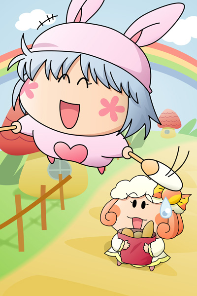

翌日、パピィはクモモに会いにミモモショップへ向かいました。
自分との思い出がなくなってしまったけれど、ムルモに告白できたという新たな報告をするために。
パピィ「あっ、クモモたん」
クモモ「あら？パピィさんクモ」
ミモモショップへの道の途中で、パピィは買い物帰りのクモモに追いつきました。
パピィ「あ、ちょうど良かったわ。
あたち今からクモモたんに会いに行くとこだったのよ」
クモモ「私の方もパピィさんに報告があるクモよ」
パピィ「それは奇遇ね！」
二人とも上機嫌に言葉を交わします。
パピィ「じゃあまずはあたちから言うわね。
なんとあたち、ムルモに告白しちゃったのよね」
そう言った瞬間、パピィの顔は真っ赤に変わりました。
パピィ「ムルモはあたちのこと忘れちゃったみたいだけど、
やっぱりあたちたちって運命で結ばれているみたいだわ」
クモモ「へ～っ、パピィさんやるときはやるクモね！」
パピィ「こんな簡単なこと、もっと前からやるべきだったわ」
この後数分間にわたりパピィの幸せなお話は続きました。
パピィ「そういえばクモモたんの報告って？」
クモモ「おおっと忘れるところだったクモ。
あの後『願いごとポットかなえます～』の説明書を
もう少し詳しく読んでみたクモよ」
パピィ「えっ、説明書にまだ続きがあったの？」
クモモ「そうクモ。
なんとあのお香の効果は成功しても失敗しても５日間で切れるクモよ」
パピィ「へっ？
５日間って、あのお香を焚いたのは今から…えーっと」
パピィは指を使って数えます。
パピィ「いち、にぃ、さん、しぃ、ご…６日前だわ！
ということは昨日のお昼で切れていることになるわ」
昨晩告白した時にはムルモの記憶は元に戻っていたことにもすぐに気がつきました。
パピィ「ムカっ、ムルモったらよくもあたちを騙ちたわね！
ムルモーっ！！」
パピィはお城を目指して飛んでいってしまいました。
でもその表情は以前と違っていて、ムルモにまた会える喜びであふれていました。
クモモ「もしかしてまずいこと言っちゃったクモ？」

ミルモ「おーい、親父！
そろそろ地下牢から出してくれてもいいじゃねーかよ」
マルモ「だめじゃだめじゃ。
パピィの脱走を止められなかった罰としてもう２日ここで反省するんじゃな」
ミルモ「パピィの脱走はオレと関係ねーだろ？」
マルモ「王子として脱走を止める義務があるはずじゃ」
ミルモ「そんなぁ～っ。
オフクロも何か言ってくれよ～」
サリア「国王様の決めることですから仕方ありませんわね」
ミルモ「バカ親父ーっ、早くここから出せーっ！」
マルモ「もう３日プラスじゃ！」
おわり
約８ヶ月もの時間を経て、ようやく『恋する妖精・パピィ編』の完結！ 今までたくさんの感想と応援をありがとうございました(^^)。
あまりひねりの無い結末ですが、とにかく無事にストーリーをまとめられてホッとしています。一部のキャラは地下牢に閉じこめられたままですけど(^^;。ちなみに今回出番の無かったワルモ団も閉じこめられたままです。
私の考えるパピィの告白シーンをストーリーという形で表現してみましたが、皆さんそれぞれ違う告白シーンを考えているはず。機会があれば皆さんの考えるパピィ（もしくはムルモ）の告白シーンを聞いてみたいですね。
(2006/11/5)